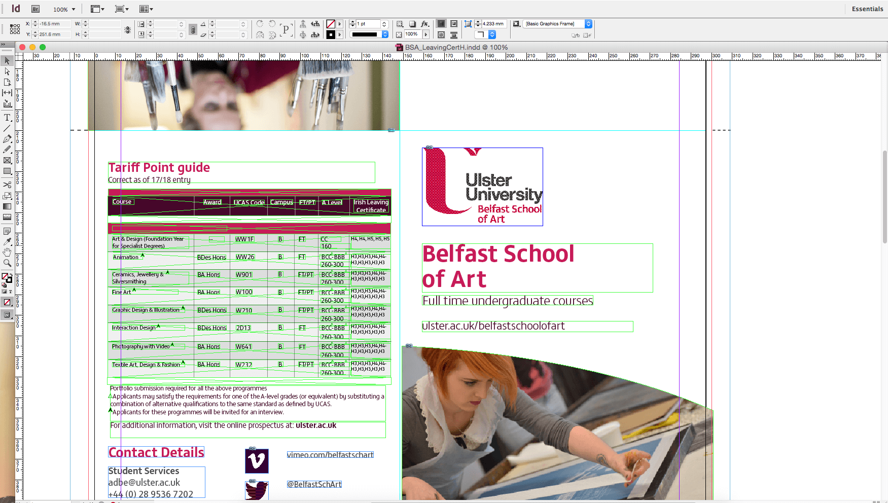

Eleven
Course Updates

Julie contacted me looking a leaflet updated to reflect the new course names and information. The file was originally made by a previous placement student using Adobe InDesign. I had to get to grips with the software pretty quickly because I hadn't used it before, and up until now I had been able to create and update leaflets in Illustrator or Photoshop. I had a print version of the leaflet in front of me, so I was able to jot down the changes on this before moving into InDesign to ensure I hadn't missed anything.
I had to amend the course descriptions for Photography and Contemporary Applied Arts to Photography & Video and Ceramics Jewellery & Silversmithing. I noticed the websites on the leaflet were directing to the old Belfast School of Art website so I changed these to point to ulster.ac.uk and the ADBE faculty pages.
I then moved onto amending the grades table. When I was using InDesign I noticed that a lot of the tables were made using shapes and lines, rather than an actual table and that the alignment of the information was off. I made these changes across the leaflet as when I was looking at the printed version, it looked somewhat messy and cluttered, and changing it to a table will make it easier when it comes to updating information in the future and keeping it aligned and consistent. I utilised the boundary boxes and set guidelines within InDesign to ensure everything was aligned properly.
I checked over the leaflet for any missed spelling mistakes. Finally I saved a copy and added the 3mm bleed as well as registration marks and fold lines to the PDF file.
You can view a PDF of the final design by clicking here.
Placement Journal
Paige Boyd